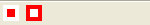

ToolBarImageButton()
语法
ToolBarImageButton(#Button, ImageID [, Mode])概要
Add an image button to the toolbar being constructed. CreateToolBar() must be called before to use this function.
参数
#Button The new toolbar button identifier. ImageID The image to use for the button. It can be easily obtained by using ImageID() from the Image library. It can be an image loaded with LoadImage() or created in memory with CreateImage(). To have a real transparent background, use the 'icon' (.ico) file format on Windows, or the PNG file format on Linux/MacOS X. Mode (optional) The mode value can be one of the following constants: #PB_ToolBar_Normal: the button will act as standard button (default) #PB_ToolBar_Toggle: the button will act as toggle buttonGetToolBarButtonState() and SetToolBarButtonState() can be used to retrieve or modify a toggle button state.
返回值
无.
示例
If OpenWindow(0, 0, 0, 150, 25, "ToolBar", #PB_Window_SystemMenu | #PB_Window_ScreenCentered) CreateImage(0,16,16) StartDrawing(ImageOutput(0)) Box(0,0,16,16,RGB(255,255,255)) Box(4,4,8,8,RGB(255,0,0)) StopDrawing() CreateImage(1,16,16) StartDrawing(ImageOutput(1)) Box(0,0,16,16,RGB(255,0,0)) Box(4,4,8,8,RGB(255,255,255)) StopDrawing() If CreateToolBar(0, WindowID(0)) ToolBarImageButton(0,ImageID(0)) ToolBarImageButton(1,ImageID(1)) EndIf Repeat Until WaitWindowEvent() = #PB_Event_CloseWindow EndIf

参阅
CreateToolBar(), ToolBarStandardButton(), ToolBarSeparator()
已支持操作系统
所有